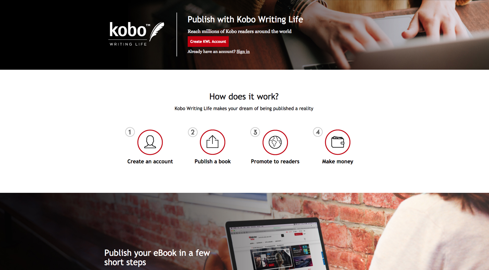
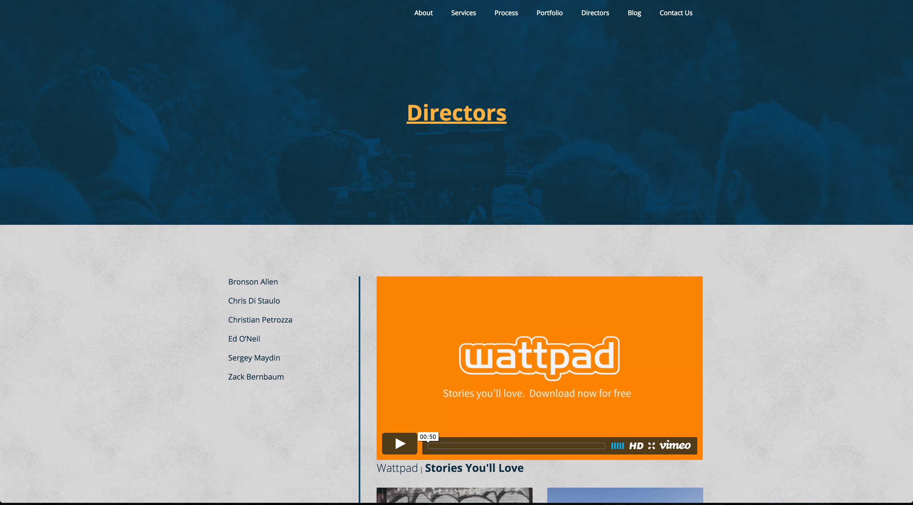
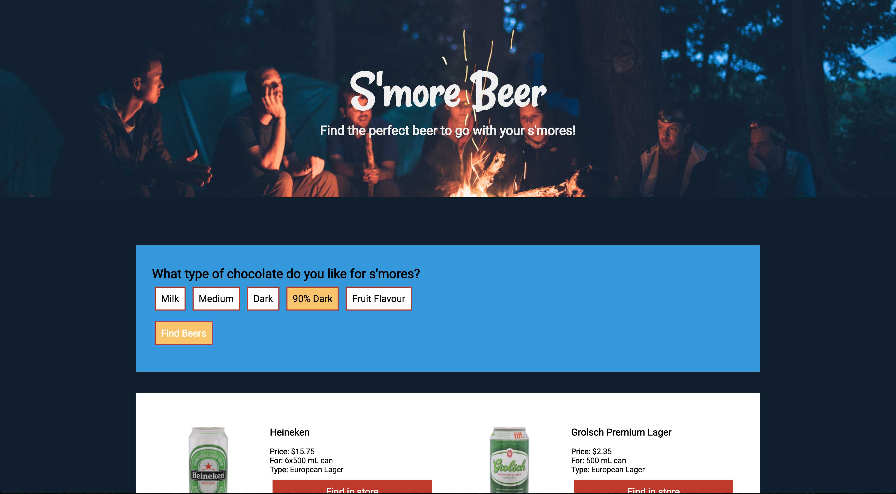

Featured Work
Kobo Writing Life
This page was a complete rebuild from the original. AI file conversion to html and css in multi languages. There is a rotating carousel of testimonials, and four main break points, although all icons and image flow between them.
81Entertainment
With 81Entertainment I was asked to come on and work on the second phase of the project, which included creating a Directors page, setting up a custom post type with custom fields, and redoing the Client section on the home page to reload the the icons.
S’more Beer
This is my first API project that also uses JavaScript and jQuery to pull info from the LCBO API and display beer that you should take camping based on the flavour of chocolate you are taking for your s’mores.
Skills
Blog Posts
»
Different GEOs = Different $$ = JS for a fix»
More on This & Siblings»
This and their siblings»
How to add a Custom Theme Logo in WordPress»
Adding Multiple Values to Radio Buttons»
Accessibility & Hidden Text»
How to make unsaved Sublime files stand out»
Title=”GIS” & and how to style them